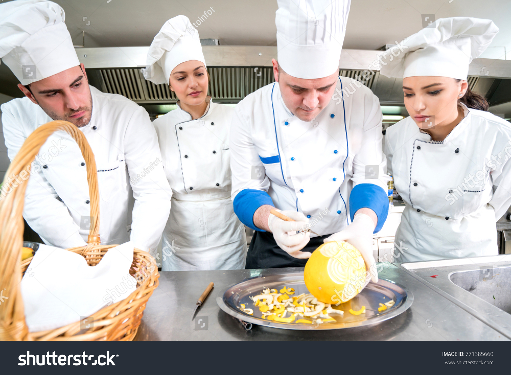

How It All Began
Founded in 2010 by chef-owner John Doe, Restaurant Name began as a small neighborhood bistro with just 10 tables. What started as a passion project quickly grew into one of the city's most beloved dining destinations.
Our philosophy is simple: source the freshest local ingredients and let their natural flavors shine through thoughtful preparation. We work directly with farmers and producers in our region to bring you seasonal dishes that celebrate our local terroir.

John Doe, Founder & Head Chef